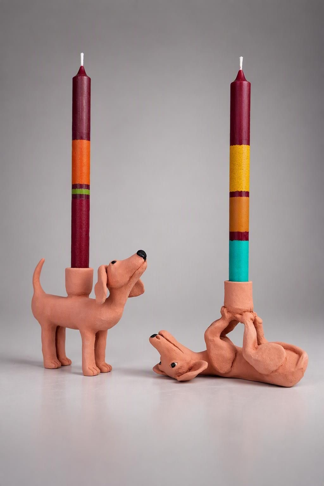
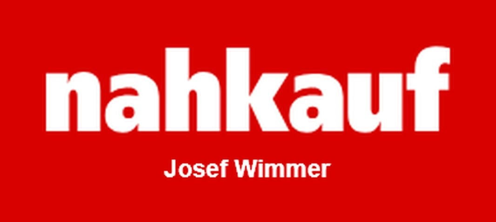

24 Loskugeln – 24 Unikate
Der helfende Adventskalender Prutting

So funktioniert’s
- Kaufen: Holt euch bei Nahkauf Wimmer (Kirchstraße 2, 83134 Prutting) während der Öffnungszeiten eine von 24 Loskugeln – zum Benefizpreis von 49 €. Der Verkauf startet nach dem 1. Advent und geht bis Weihnachten. Und wer mag, darf auch gern mehr geben, denn jeder Euro hilft.
- Verschenken: Schenkt das Los euren Liebsten zu Weihnachten und lasst euch von ihrer Freude anstecken.
- Einlösen: Hinter jeder Losnummer verbirgt sich ein Tier, das ihr vorher im Schaufenster bewundern konntet. Die Beschenkten dürfen ihr Tier nach Weihnachten bei uns abholen.

Freude garantiert
Mit einem Los schenkt ihr Vorfreude auf ein Unikat, das nur eure Liebsten bekommen. Jedes Los gewinnt, und die Beschenkten dürfen sich über ein handgefertigtes und handbemaltes Stück freuen.
Warum?
Von Prutting für Prutting – ihr unterstützt die Pruttinger Dorfstiftung!
Der Erlös der Aktion kommt der Pruttinger Dorfstiftung unter der ehrenamtlichen Leitung von Bürgermeister Johannes Thußbas zugute. Mit eurem Loskauf unterstützt ihr die Arbeit der Stiftung, die sich für ein gutes Miteinander der Menschen in Prutting einsetzt.
Ob tierischer Kerzenhalter, Freude oder ein gutes Gefühl: Ihr gewinnt immer – und Prutting gewinnt mit!
Im Schaufenster